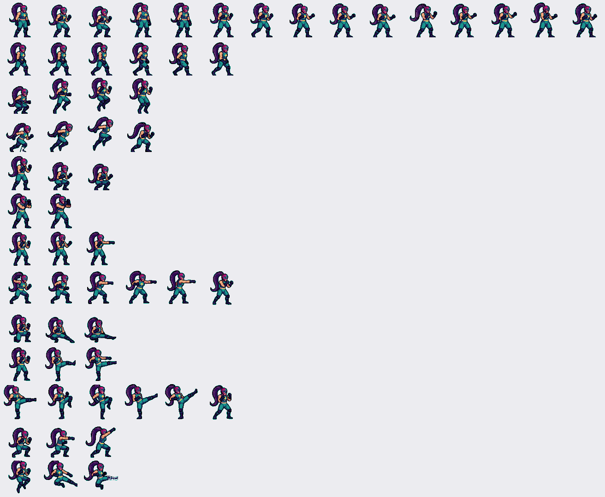
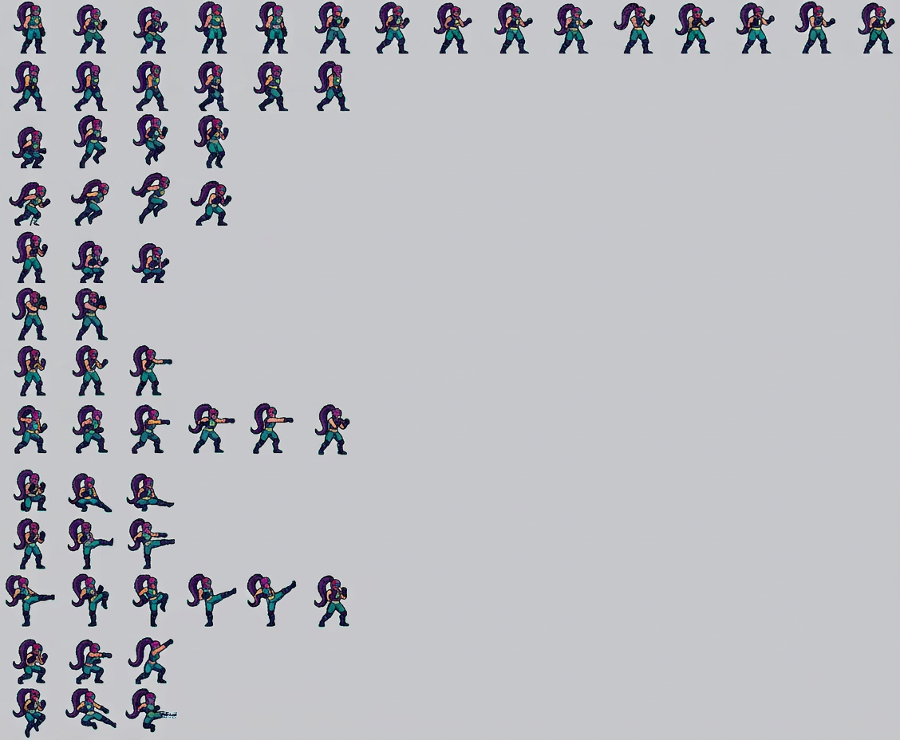
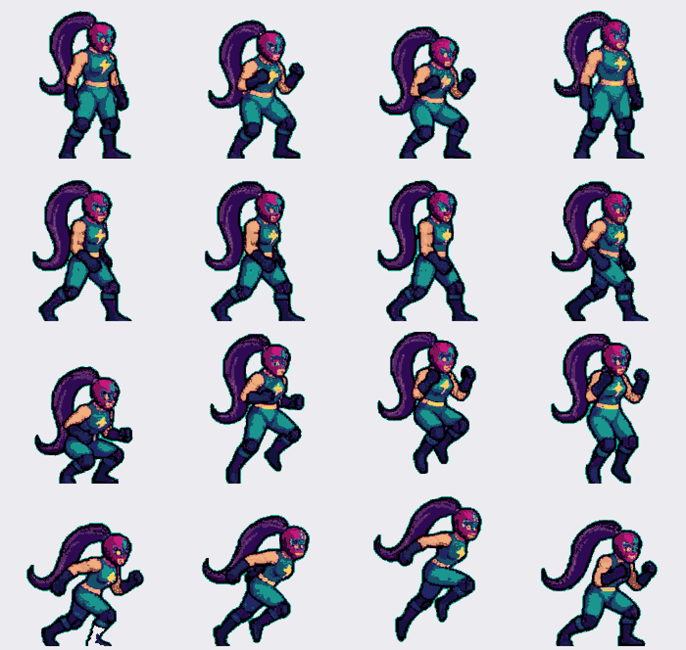
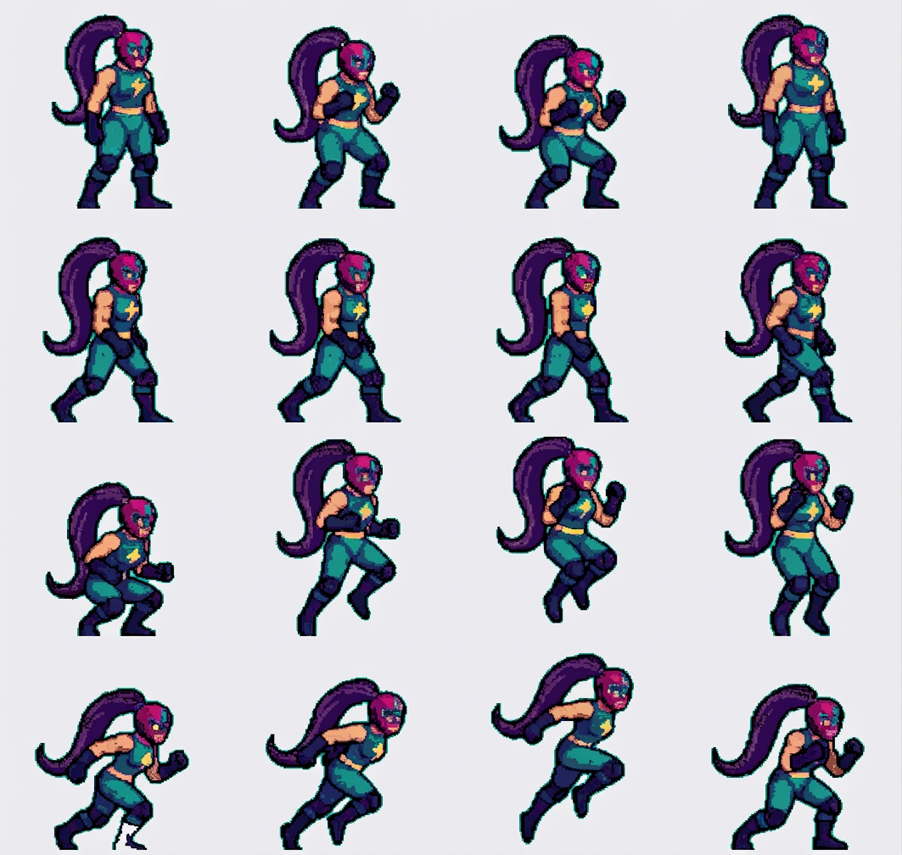

La hoja que devuelve la IA (media hoja, 13 filas)
Le pasé media hoja a 1 px por píxel de arte (1 312 × 1 079) y le pedí la misma rejilla, las mismas poses y colores planos. Conserva las 13 filas y las celdas vacías, pero no devuelve píxeles planos.


El bloque a 2 px por píxel de arte (4 × 4)
Aquí la IA sí puede ver la rejilla de píxeles. Sale mucho más nítido, pero se inventa poses: la última fila cambia de caminar a correr.


Visor de frames · los 16 sprites recortados del bloque
Recortados por rejilla del bloque de la IA. Cambia entre la IA tal cual y la IA aplanada a la paleta de Voltia (cada píxel al color más cercano, sin mezclar).
—
Medidas de la prueba
| Métrica | Original (hoja oficial) | IA · media hoja | IA · bloque 4×4 | IA + paleta |
|---|---|---|---|---|
| Colores distintos | 20 | 86 163 | 157 466 | 19 |
| Colores con ≤ 20 px (ruido) | 0 | 85 751 | 156 258 | 0 |
| Transiciones suaves (bordes) | 6,9 % | 91,7 % | 82,0 % | plano |
| Rejilla de celdas | exacta | conservada | conservada | exacta |
| Poses | las 25 | reconocibles | inventadas | inventadas |
| Tamaño del sprite | 94 × 151 px de arte | ~40 × 65 px | 145 × 230 px | 145 × 230 px |
Lo que esto dice: la IA no entrega píxeles planos «de fábrica» — aplanar sí se puede
(19 colores, sin mezclas), pero redibuja las poses, y a escala de hoja completa ni
siquiera llega a la resolución del arte (40 px por personaje). Para reconstruir las 25
animaciones sin inventar poses haría falta ir bloque a bloque a 2 px por píxel de
arte y comprobar pose por pose: son muchas pasadas y aun así la IA decide.
Alternativa sin IA y sin filtros: la hoja oficial ya es el nativo exacto. Si lo que se busca es «colores más limpios», lo único honesto es redibujar el dibujo de origen, no pasarlo por un modelo que reinterprete.
Alternativa sin IA y sin filtros: la hoja oficial ya es el nativo exacto. Si lo que se busca es «colores más limpios», lo único honesto es redibujar el dibujo de origen, no pasarlo por un modelo que reinterprete.